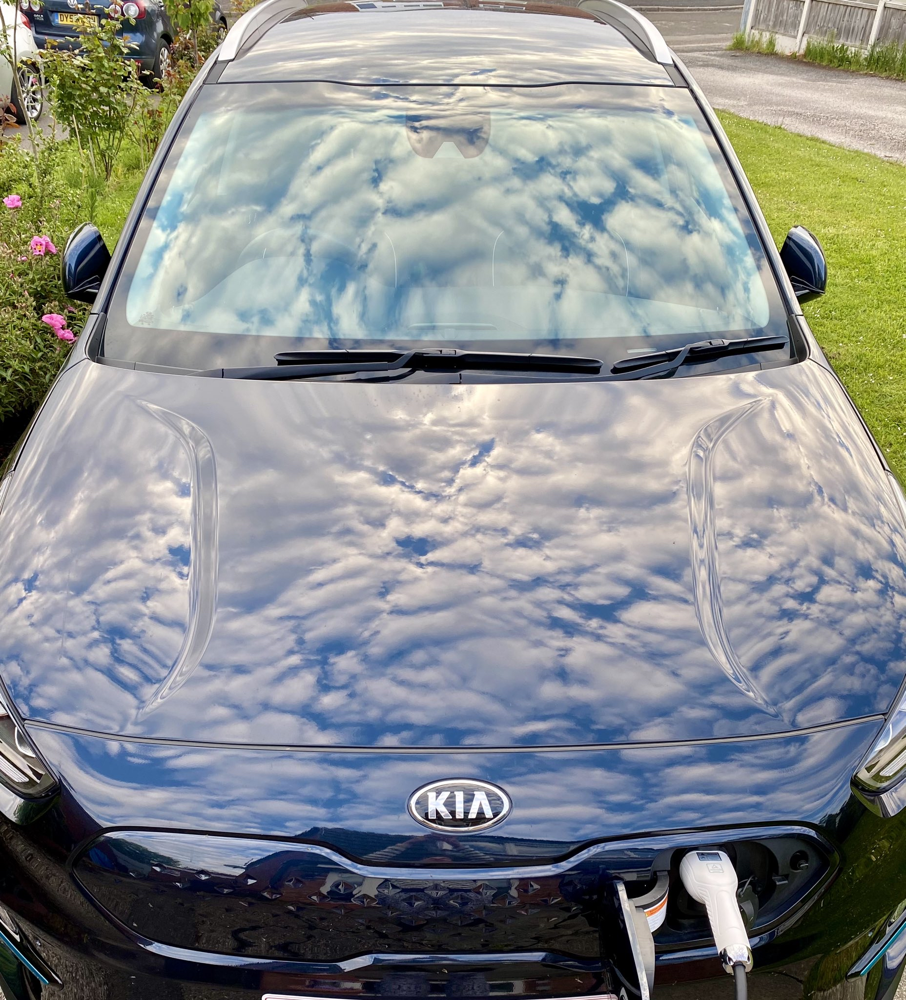

"It's a little bit like Airbnb for the chargers"
Gill Nowell, board member of EVA England, on community charging, what EVA England does to help new members and her own experience as an EV driver
Despite the need to phase out of fossil fuel cars by 2030, there are still misconceptions about electric vehicles (EV).
Recently, Allegra Stratton (spokesperson for the COP26) or Michael Fabricant, Lichfield's MP, have said they prefer their diesel vehicle, arguing "rage-anxiety" didn't make switching to an EV attractive enough.
A feeling that Gill Nowell, a board member of EVA England (an association for EV drivers or enthusiasts) does not share:
"I think it's helpful to go back to basics, and to remember that in the UK, 99% of all car journeys are under 100 miles. The daily average mileage is about 28 miles.”
For Gill, the sheer fact of driving an EV or being driven in an electric car can help people understand that range-anxiety is not actually an issue.
“For me really to help people transition to an electric car, is all about getting people into an electric car. And just giving them that experience.”
This does not mean she never faced rage-anxiety.
“I've experienced range anxiety on what was supposed to be an eight hour round trip, and it turned into a 10 hour round trip and quite a lot of stress.
“It did get stressful. So I've really been there and I've really experienced range anxiety. But that was almost 9 months ago.”
She said that for EVA England - who opened its door to members back in March 2021 and is a member of GEVA (Global EV Drivers’ Alliance) which is made up of 37 electric vehicle associations across 27 countries - range-anxiety wasn’t one of the main issues to be brought, but motor service areas. Similar to what she faced.
“A lot of the issues we've heard about from EV drivers have been around motor service area. Charging under a certain network.”
She added that since it was bought from the previous owner, those problems were less frequent.

The role EVA England has is not just aimed to people who already own a vehicle that can be plugged, but also those who are thinking of making the switch.
“Electric Vehicle Association England exists to really help both current and also prospective electric car drivers on their journey” and added that they provide all members with information that suits everyone, even those new in the world of electric vehicles.
“A lot of the challenges I think are relatively straightforward to address. Things like you know terminology. So what is a connector what is CHAdeMo, what is CCS”.
Or what options do they have to charge depending on their situation, “How do I go about getting a charge point installed at home, or what do I do if I can’t charge at home”.
About 30% of households do not have access to an off-street charger, with some major cities numbers rising to 40%.
Sharing your charger with a neighbour
A charging option she sees has becoming more and more of an option is community charging, which she signed up to via the Co-Charger app.
This allows her neighbours to use her own charger, “It's a little bit like Airbnb for the chargers.”
With almost 200,000 domestic chargers funded through the Office for Zero Emission Vehicles grant schemes, community charging could help grow the current number of 25,000 public chargers by almost tenfold.
Gill explained how someone could book her charger from 6pm to 6am every Tuesday through the app.
She sees it as a way to help people make the switch: “And there are others that are helping people to make the switch, you know, as easy as it possibly can be.”
Making sure off-street charging prices can be fair
Being able to charge at home, she knows the cost of charging is cheaper for her, but she thinks the next step should have those who can’t do it, be at the same level as those who can.
“Looking forward, there needs to be a way in which to make that cost more favourable to the EV driver.
"Not to discriminate between those who can charge at home, and those who can't charge at home.”
Gill mentioned how the possibility to decide when to charge at home is being implemented for on-street charging and how it could help balance the price difference:
"Connected Kerb are looking at the same approach for on-street charging. You can actually schedule your use of an on-street charger, the car will only charge when it's cheapest and greenest to do so.
"Which is really, really interesting. I think it would be fantastic for us to get to a place where the cost is fair, because I can charge really cheaply at home."
What about the proliferation of Charging Point Operators (CPO), with currently more than 30 in the UK?
Gill mentioned that EVA England ran a survey earlier in the year, with more than 1,000 responses.
The majority wanted the experience of using public charging points to be easier.
“We found that 87% just want one smartphone app across all public networks”.
With contactless being the preferred means of payment, as well as pricing transparency.
"I know that I've had it where I've used a local public charging point, I didn't actually know what I was paying.
"There was nothing there to tell me what the cost was, which was bizarre”, she added “I hope that that's an exception. I would bet that's pretty rare but still it happens."
With air pollution causing 40,000 deaths per year in the UK, making sure that the air we breathe is clean is essential. And Gill sees electric vehicles as a part of the solution:
"You know of course we need to walk more. We need to cycle more. We need to use sustainable and green public transport more.
"But if we do need to use a car to get from A to B, then let's make sure it's got a plug”.